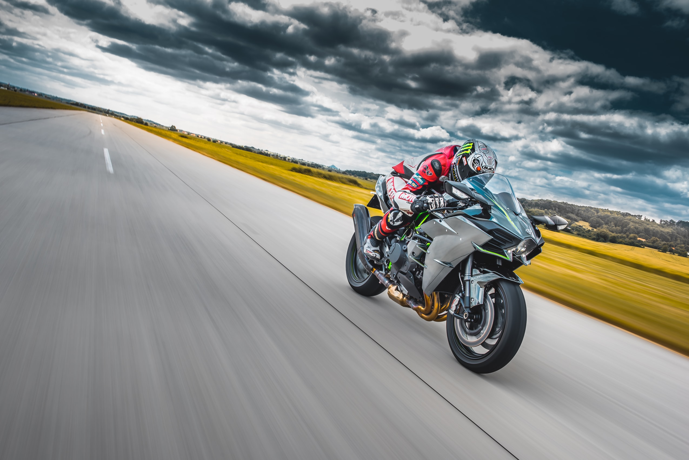

Szenvedély: hajsza, megszállottság és kockázat a motoron
Böröczky Pepi József mondogatta régen: addig fogok rajongani a motorsportért, amíg meg nem értem, hogy miért kockáztatják a motorosok az életüket.
A mondás szerint: az a különbség a motorversenyző és a labdarúgó között, hogy a labdarúgó egészségesen sérültnek tetteti magát, a motorversenyző meg sérülten egészségesnek. Hány olyan esetet láttunk, amikor a csapattagok felküzdik valahogy a motorra a mozdulni sem tudó overallos versenyzőt, aki utána órákon át száguldozik. Pepi gondolatmenetét felhasználva, adódik a kérdés, hogy miért?
Pepi szegény soha nem érthette meg ennek a lényegét, mert ő pontosan olyan megszállott volt, mint maguk a motorosok. Egyik vasárnap reggel jött be MotoGP-t közvetíteni, állt kinn az utcán pizsamában, borzalmas állapotban, érthetetlen volt a látvány. Mint kiderült, egy nappal korábban műtötték, de kiszökött a kórházból, hogy leközvetíthesse a 6 órás műsort. Hogy aztán mit kapott az orvosoktól az egy másik dolog, de utána rögtön kiszökött valamilyen kabaré előadás kedvéért is.
Ezek a történetek keringtek bennem, amikor lassan egy hete véget ért a 83. Bol d’Or. Amikor szakadó eső miatt leállították a küzdelmet, látni lehetett az arcokon a kétségbeesést. Most akkor nem motorozhatunk?
Az egész életérzésnek a gyökere az 1800-as évek végére vezethető vissza. Mind az autó-, mind a motorversenyek őskorában hosszú távon zajlottak az események, mai fogalmaink szerint értelmezhetetlen körülmények között. Aszfaltozott útról szó sem lehetett, s mint az Várhegyi Ferenc tanulmányából kiderül, 1894-ben a Párizs-Rouen-Párizs útvonalon „Verseny lovak nélküli járművek részére” címmel a Petit Journal újság kezdeményezte a világ első autó- és motoros viadalát – melyen főleg autókkal vettek részt. Egy évre rá már az Egyesült Államok is megrendezte a maga autós és motoros versenyét, ahol nem kevesebb, mint 100 (!) induló állt rajthoz, igaz csak ketten értek célba. Angliában, 1897-ben került sor a legelső tisztán motoros küzdelemre, hogy aztán 1899-ben már Magyarországon is bemutatkozzon a sportág.
Innentől ismert a történet. Zavaros történelmi események rövidebb időre meggátolták a sportág fejlődését, de a XX. században rohamos fejlődésnek indult a motoros élet. Ha megnézzük az „alapítóatyákat”, csupa megszállott embert találunk, akik a családjuk egzisztenciáját is kockára téve űzték ezt a – nem túl olcsó – szenvedélyt.
Mert a hangsúly ezen a szón van; szenvedély! S ez nincsen másképpen ma sem.
A ma nagyágyúi pontosan olyanok, mint az ősapák. Talán az úgynevezett Endurance motorozás őrzött meg valamit abból a régies szenvedélyéből. Az aktuális világbajnok istálló (Webike SRC Kawasaki France) vezetője, Gilles Stafler mondta a Bol d’Or előtt: „Nagyszerű volt vb-t nyerni, örülök a sikereinknek, de dolgozni kell tovább, nem ülhetünk a babérjainkon, minden eddigi eredményünk a múlté, nem szabad vele foglalkozni, menni kell tovább, hogy jobbak legyünk, mint tavaly voltunk.” Stafler valójában arra utalt, hogy mindössze egyetlen futamgyőzelemmel (Le Mans) lettek világbajnokok, és őt ez nagyon zavarja. „Hiába miénk a trófea, ez semmit sem változtat meg!” Egy ilyen hozzáállású főnököt, csak hasonszőrű beosztottak tudnak elviselni.
Ezek a keménykezű csapatfőnökök, kis túlzással olyanok, mint a keménykezű diktátorok, akiknek a szava szent és sérthetetlen. Gilles Stafler gondolkodása erre utal, ami rendkívül célratörő. „A világbajnoki cím egyetlen dolgot szolgál, hogy könnyebben szerezzünk magunknak támogatókat a további munkához, de valójában az égvilágon semmit nem változtat meg.” Stafler tehát szenvedélyesen hajszolja a győzelmet, és nemigen éli meg a boldogságot. Figyelmébe lehetne ajánlani Balczó András gondolatát, aki szerint „a boldogság nem függ a sikerességtől. A nem nyerés félelme állandóan gátolja az örömérzetet.”
Hasonló mosolytalan életet élt a másik legendás csapatvezető Dominique Méliand, aki 15 vb-címet szerzett a Suzuki Endurance Racing Team-mel, és túlzás nélkül állítható, hogy a halál torkából jött vissza hosszú betegeskedés után, hogy újra elfoglalhassa a csapatvezetői széket. Méliand volt az, aki mint egy karmester dirigálta végig a 24 órás versenyeket étlen-szomjan. Az idén visszavonuló mesternek köszönhető, hogy az Endurance-ban magasabb szintre emelték az együttműködést Európa és Ázsia, főleg Japán között. Ez a kooperáció mindkét fél számára előnyös lett, hiszen, mint Maszakazu Fujii, az FCC TSR Honda vezetője mondja „a 90-es években a Grand Prix versenyzést néhány emberrel meg tudtam oldani, ez az Endurance-ban már akkor lehetetlen volt. Nem tehettem mást, mint európai segítséget kérni.” A felismerés első osztályú volt, hiszen a két munkamorál egyesítése csak sikert hozhatott. Az FCC koordinátora, Bruno Beggiano szerint „az európaiak mindent hirtelen akarnak megoldani, a japánok ellenben körülményesek, betartják a protokollt, lassúak.” De egy valamiben nagyon jók, a 8 órás versenyek szervezésében, hiszen számukra 8 óra csupán egy sprintverseny.

A két világ ütközési pontját talán Gilles Stafler fogalmazta meg a legjobban. „Én akarok maradni a kapitány a hajón!” Azaz egy idő után el kellett dönteni, hogy ki az erősebb. A japánok joggal akartak nagyobb beleszólást a dolgokba, hiszen a gyári támogatást és technikát ők adták. Staflernek erről is megvan a véleménye. „Ehhez csak annyit fűznék hozzá, hogy velük könnyebb Ázsiába utaznunk, anyagilag nem olyan megterhelő számunkra, mert ők állják.”
Ez a csupa motoros szenvedélyben szenvedő ember, ugyanakkor megmaradt embernek is. S talán ez a legfontosabb. Mi sem bizonyítja mindezt jobban, mint az elmúlt két hónap zűrzavaros eseménye. Dominique Méliand a harmatgyenge SERT-tel 10 perc híján július végén megszerezte a 16. vb-címét, ám egy műszaki hiba meggátolta ebben, és az SRC Kasasaki ülhetett fel a trónra. A búcsúja nem lett tehát álomszerű, viszont a visszavonulása után a csapata megnyerte a Bol d’Or-t. A bosszankodásai ellenére még Gilles Stafler is úgy fogalmazott, hogy az ősi rivális nagyon megérdemelte a győzelmet, és látszik, hogy az élet egyensúlyra törekszik, hiszen ekkora pech után kárpótolta őket valamivel.
"Mi ez, ha nem a szenvedély?"